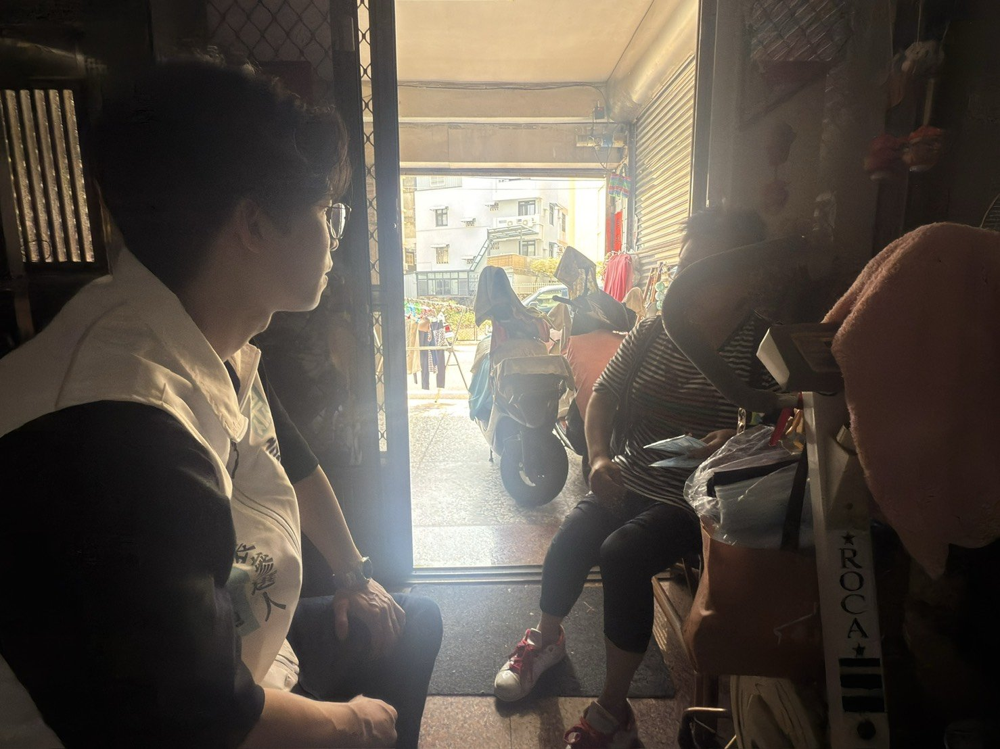

04 Field Notes — 行動足跡
從學校到巷弄，
從交通到動保。
參選不是選舉那一天才開始的事。在被提名之前，凱倫已經以議員助理、東區主任、青年諮詢委員的身份，走遍東區的學校、社區與街口。基層服務不是選前才做的事——是每天都在做的事。



近年來，凱倫在地方服務第一線工作，接觸到許多民眾最真實的需求與困難，也看見基層政治如果能夠更積極、更貼近人民，很多問題其實可以更早被看見、更快被處理。
東區的地理位置接近台中，有台 74 線、國道一號與國道三號，交通條件便利，未來也有台中捷運綠線延伸、台鐵捷運共構金馬站等重大建設。整體來說東區具備相當優秀的宜居發展潛力，但現階段距離真正宜居，仍然還有一段路。
一位民代在都市發展中的角色，應該做出城市格局，而不是只做清水溝、修路燈的「高級里長」；也不應該只是好大喜功，追求表面上的硬體建設，最終造成公帑浪費。
未來凱倫希望推動東區朝向更安全交通環境、更完善生活機能、更舒適公共空間，以及更具前瞻性的整體規劃發展，讓東區不只是通勤方便，而是真正適合生活、適合成家、也適合下一代成長的地方。
民國 84 年 5 月於彰化出生，現年 30 歲，家中排行老大。畢業於國立嘉義大學生物事業管理學系。退伍後在地方產業端歷練四年（光展應材、亞德客國際擔任業務），113 年起進入彰化縣議員吳韋達服務處擔任議員助理，並擔任東區主任。
同時擔任彰化縣青年諮詢委員會 城市發展組組長，這份角色讓凱倫從更宏觀的角度思考彰化的未來——城市規劃、交通建設、青年留鄉等議題，都是組內的工作核心。
東區交通條件便利，未來有台中捷運綠線延伸、台鐵共構金馬站等重大建設，但宜居還差一段路。我希望推動東區朝向更安全交通、更完善生活機能、更舒適公共空間，讓這裡不只是通勤方便，更是適合生活、適合成家、也適合下一代成長的地方。
地方政治不應只是被動等待陳情、零碎處理個案。真正有價值的地方政治，應該主動發現問題、提前提出對策、持續追蹤進度，並讓民眾清楚知道事情的所有進度與成效。我會堅持務實問政、理性監督，讓地方政治盡可能透明公開。
參選不是選舉那一天才開始的事。在被提名之前，凱倫已經以議員助理、東區主任、青年諮詢委員的身份，走遍東區的學校、社區與街口。基層服務不是選前才做的事——是每天都在做的事。

台中捷運綠線延伸彰化、台鐵共構金馬車站是東區未來最大的發展機遇。督促市府提前盤點周邊道路、停車、公共空間需求，避免等到通車才被動因應。
系統性盤點東區易肇事路口、通學路線、長輩散步路徑，爭取號誌調整、人行道改善、夜間照明補強。讓孩子上學、長輩出門、年輕人騎車都更安心。
年輕人願不願意留在東區，看的是日常生活的細節：採買方便嗎？運動空間夠嗎？孩子有地方玩嗎？我會把這些「軟性指標」提升到市政層級討論。
建立陳情案件數位化追蹤平台，每一件選民反映的問題，都有編號、有進度、有結案紀錄。陳情不再石沉大海，每一通電話都會有回音。
落實民眾黨「公開透明」主張，質詢內容、預算審查紀錄、選民服務統計，定期公開揭露。讓代表的工作被看見、被檢驗、被追蹤。
無論是道路、號誌、長照、教育、青年議題，或任何東區生活上的疑難雜症——電話、email、現場拜訪都歡迎。每一件陳情都會建檔、追蹤、回覆。
把您的一票，交給願意換個方法做事、
帶著新世代視角為東區把關的人。